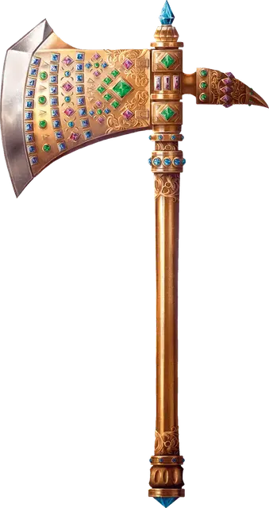

Топор дварфийских владык
Axe of the Dwarvish Lords
Оружие (Боевой топор), артефакт (требуется настройка)

Один молодой дварфийский принц, увидев проблемы, перед которыми встал его народ, понял, что дварфам нужно что-то, что объединило бы их. Уйдя глубоко в горы, глубже, чем когда-либо копали дварфы, он дошёл до пылающего сердца огромного вулкана. С помощью Морадина, дварфийского бога творения, он создал четыре инструмента: Кирку звёздной стали, Горн сердца земли, Наковальню песен и Формующий молот. С ними он выковал Топор дварфийских владык.
Вооружившись этим артефактом, принц вернулся к кланам дварфов и принёс им мир, покончив со взаимными обидами и презрением. Кланы стали союзниками, отбросили врагов, и настала эра благополучия. Теперь этого дварфа помнят как Первого Короля. Когда он постарел, он передал это оружие, ставшее символом власти, своему наследнику, и его преемники передавали топор много поколений подряд.
Позже, в тёмную эру предательств и пороков, топор был утрачен в кровавой гражданской войне, пылавшей стремлением заполучить этот топор и даруемые им силу и статус. Теперь, столетия спустя, дварфы всё ещё ищут топор, и многие искатели приключений гонялись за слухами и разоряли старые склепы в его поисках.
Магическое оружие. Топор дварфийских владык — магическое оружие, дарующее бонус +3 к броскам атаки и урона, совершаемым с этим оружием.
Если при атаке этим оружием на к20 атаки выпало «20», топор наносит 20 дополнительного Рубящего урона.
У этого оружия есть свойство Метательное с нормальной дистанцией 20 футов и максимальной 60 футов. Когда вы попадаете дальнобойной атакой этим оружием, оно наносит 1к8 дополнительного Силового урона (или 2к8 дополнительного Силового урона, если цель — существо типа Великан). Немедленно после попадания или промаха такой атакой Топор прилетает обратно в вашу руку.
Благословения Морадина. Пока вы настроены на топор, вы получаете следующие преимущества:
Тёмное зрение. Вы получаете Тёмное зрение дальностью 60 футов. Если у вас уже есть Тёмное зрение, его дальность увеличивается на 60 футов.
Выносливость камня. Ваше Телосложение увеличивается на 2, но не выше 20.
Дары Творца. Вы получаете владение инструментами Пивовара, Каменщика и Кузнеца.
Связь с кузней. Вы обладаете Иммунитетом к урону Ядом и Сопротивлением урону Огнём.
Разрушение. Когда вы попадаете этим оружием по объекту, он получает максимальный возможный урон.
Призыв Земного элементаля. Пока вы держите топор, вы можете действием Магия призвать Земляного элементаля. Существо появляется в незанятом пространстве в пределах 30 футов от вас, понимает известные вам языки, подчиняется вашим приказам и совершает свой ход сразу после вас с тем же значением Инициативы. Элементаль исчезает через 24 часа, если погибнет, или если вы отпустите его Бонусным действием. Вы не можете использовать это свойство снова до следующего рассвета.
Случайные свойства. Топор обладает следующими случайными свойствами:
2 малых положительных свойства
1 основное положительное свойство
2 малых отрицательных свойства
Путешествие по Глубинам. Вы можете действием Магия коснуться топором неподвижного элемента дварфийской каменной кладки и сотворить с помощью топора заклинание Телепортация. Если ваша цель находится под землёй, неудача или перенос вас не в неожиданное место невозможны. Вы не можете использовать это свойство снова, пока не пройдёт 3 дня.
Уничтожение Топора. Единственный способ уничтожить топор — растопить его в Горне сердца земли, где он был создан. Он должен пролежать в пылающем Горне 50 лет, прежде чем наконец расплавится и будет уничтожен.